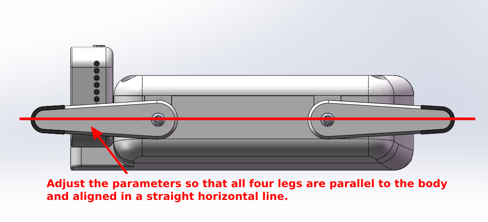

Preset Actions
Try holding and dragging here
Servo Calibration Instructions
After ESP-Hi assembly, the servo baseline positions may not be on the same plane. In this state, ESP-Hi often cannot move properly and needs calibration.
Calibration steps:
- Click "Enter Servo Calibration Mode", ESP-Hi will try to level all four legs.
- Click the four servo buttons on the screen to fine-tune the angles of the four servos until all four legs are in line with the body. If you find it impossible to level, please unscrew the screws between the legs and the servos, adjust the angle and screw back.
- Click the "Exit Calibration Mode" button, ESP-Hi will exit calibration mode.

Do not manually bend the servos, otherwise the servos may be damaged!
Front Left0
Front Right0
Back Left0
Back Right0
ESP-Hi
0
Custom Action Sequence
Web Search
Web Search key: Checking...
LLM Context key: Checking...
Keys are stored only in device NVS and are never shown again. Simple searches use Web Search. Detailed research requests can use LLM Context when enabled. Use the same key in both fields for a new Brave Search plan, or separate a deprecated Free Search key from a new LLM Context key.